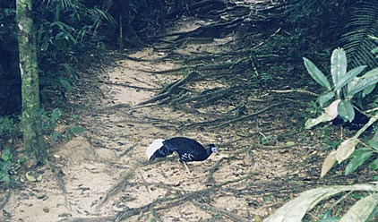
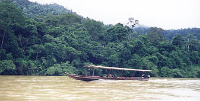

visited 12 - 14 Nov 99
web version, with
|
|
| Prior Trav-E-Log: Melaka, Kuala Lumpur | The jungle from 100 foot above the ground.... |
(Note:) This describes travel in S.E.Asia between Oct 16, 1999 and Jan 22, 2000.
| Taman Negara is Malaysia's National Park, akin to Sequoia
National Park or the Grand Teton in the USA, but with a Jungle theme. It
can be reached in one day by taking an early morning 3 1/2 hour bus ride
from Kuala Lumpur (near Titiwangsa subway stop) to Jerantut, and then a
half hour taxi ride to Kuala Tembeling. From here, you travel 2 1/2 hours
by river boat to the park headquarters (HQ), where you pay an entry fee
and buy a camera pass if you want to expose your camera. In lieu of the
pricey park lodgings, I stay in a dorm room in the village across the narrow
river for 1/5 the price. (Must make up for the lost wallet.) My roommate
is Roman Morales Garcia, an interesting Spaniard from the Canary Islands,
whose claim to fame is writing a book about walking down the entire length
of the Andes, all the way to Patagonia. He is now biking many select areas
of South-East Asia, and thinking about his next book.
Maps showing the location of jungle trails are available at the park HQ for a reasonable fee. In the morning I strike out alone with my camera and hike one of the shorter trails in the patchy fog. I stop at the crest of a hill, thinking I'm at the end of the trail, and remove several leaches. On the way back to camp, my stealthy footsteps flush three Vieillots Crested Firebacks just five feet ahead from the underbrush. Later, a ranger says most visitors to the park never see anything as wild as these, so I feel fortunate. He also tells me that the trail actually continued up to a better lookout. Next time. Highlights of the jungle trip were the Jungle Canopy Rope walk, the night-time nature walk, and seeing two hornbills from the riverboat when leaving. Unlike park brochures, many travel guidebooks warn tourists that if you go to the Taman Negara to see animals, you will be disappointed. Properly warned, I go to see the vegetation, and am delighted. The only detractor was the abundance of hungry leaches on the trails for a day after each rainfall, and it has been raining every day. On my next trip, though, I would like to spend several days at a remote blind, and venture deeper into the jungle. Hopefully, that visit will not be in the rainy season. After two nights, Roman and I head out of the park on the same river boat. He collects his bike and heads for another jungle park, while I share a taxi to the next town, Mela, to catch the 'Jungle Train' to Kota Bharu. (More photos of the National Park below.) Bill
|

|
Photos shows a typical trail, and one reason you must watch every step you take in the jungle. A strong flashlight is needed to spot animals at night, as that is the most likely time to see them from the blinds set up in the park.
=================================================
The base of this tree is 10 meters across - or 30 foot for the metrically challenged.
I have always loved walking in the woods, but found it real special among these unfamiliar giants.
=================================================
Thirty
minutes of the river travel to the National Park is in virgin jungle on
one side of the river. We also saw water buffalo and lots of kingfishers
during the ride. The guides say that during drought, passengers must get
out and push the boat through shallow regions, significantly increasing
travel time. We won't have that problem, as it's been raining every day.
=================================================
A
companion boat similar to ours leaves the park to pick up supplies -- requiring
5 to 6 hours for the round trip. This helps explain the high prices at
the concession in the park.